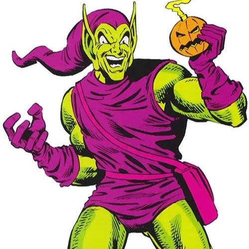
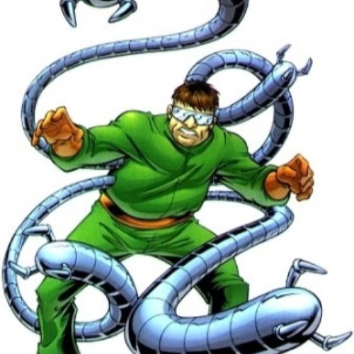
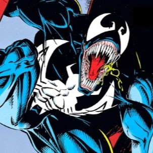
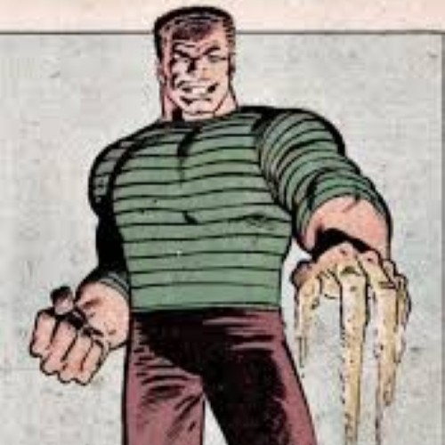

 El Duende Verde |
 Doctor Octopus |
 Venom |
 El Hombre de Arena |
origenes
El Duende Verde
Norman Osborn desarrolló una obsesión con Spider-Man debido a su constante interferencia en sus planes criminales. La rivalidad creció hasta convertirse en algo personal al descubrir la identidad de Peter Parker.
Doctor Octopus
Otto Octavius culpa a Spider-Man por arruinar sus experimentos y detener sus planes. Su orgullo y deseo de demostrar superioridad intelectual lo llevaron a odiarlo profundamente.
Venom
Venom nació de la unión entre el simbionte alienígena y Eddie Brock, ambos resentidos con Peter Parker. El simbionte fue rechazado por Spider-Man y Eddie perdió su carrera por culpa de Peter.
El Hombre de Arena
Flint Marko es un criminal perseguido frecuentemente por Spider-Man. Su enemistad surge de sus constantes enfrentamientos y del intento del héroe por detener sus delitos.